Note
Click here to download the full example code
Overview of MEG/EEG analysis with MNE-Python¶
This tutorial covers the basic EEG/MEG pipeline for event-related analysis:
loading data, epoching, averaging, plotting, and estimating cortical activity
from sensor data. It introduces the core MNE-Python data structures
Raw, Epochs, Evoked, and
SourceEstimate, and covers a lot of ground fairly quickly (at the
expense of depth). Subsequent tutorials address each of these topics in greater
detail.
Page contents
We begin by importing the necessary Python modules:
import os
import numpy as np
import mne
Loading data¶
MNE-Python data structures are based around the FIF file format from Neuromag, but there are reader functions for a wide variety of other data formats. MNE-Python also has interfaces to a variety of publicly available datasets, which MNE-Python can download and manage for you.
We’ll start this tutorial by loading one of the example datasets (called
“Sample”), which contains EEG and MEG data from one subject
performing an audiovisual experiment, along with structural MRI scans for
that subject. The mne.datasets.sample.data_path() function will
automatically download the dataset if it isn’t found in one of the expected
locations, then return the directory path to the dataset (see the
documentation of data_path() for a list of places
it checks before downloading). Note also that for this tutorial to run
smoothly on our servers, we’re using a filtered and downsampled version of
the data (sample_audvis_filt-0-40_raw.fif), but an unfiltered version
(sample_audvis_raw.fif) is also included in the sample dataset and
could be substituted here when running the tutorial locally.
sample_data_folder = mne.datasets.sample.data_path()
sample_data_raw_file = os.path.join(sample_data_folder, 'MEG', 'sample',
'sample_audvis_filt-0-40_raw.fif')
raw = mne.io.read_raw_fif(sample_data_raw_file)
Out:
Opening raw data file /home/circleci/mne_data/MNE-sample-data/MEG/sample/sample_audvis_filt-0-40_raw.fif...
Read a total of 4 projection items:
PCA-v1 (1 x 102) idle
PCA-v2 (1 x 102) idle
PCA-v3 (1 x 102) idle
Average EEG reference (1 x 60) idle
Range : 6450 ... 48149 = 42.956 ... 320.665 secs
Ready.
Current compensation grade : 0
By default, read_raw_fif() displays some information about the
file it’s loading; for example, here it tells us that there are four
“projection items” in the file along with the recorded data; those are
SSP projectors calculated to remove environmental noise
from the MEG signals, plus a projector to mean-reference the EEG channels;
these are discussed in the tutorial Background on projectors and projections.
In addition to the information displayed during loading,
you can get a glimpse of the basic details of a Raw object
by printing it; even more is available by printing its info attribute
(a dictionary-like object that is preserved across
Raw, Epochs, and Evoked
objects). The info data structure keeps track of channel locations,
applied filters, projectors, etc. Notice especially the chs entry,
showing that MNE-Python detects different sensor types and handles each
appropriately. See The Info data structure for more on the Info
class.
print(raw)
print(raw.info)
Out:
<Raw | sample_audvis_filt-0-40_raw.fif, 376 x 41700 (277.7 s), ~3.7 MB, data not loaded>
<Info | 15 non-empty values
bads: 2 items (MEG 2443, EEG 053)
ch_names: MEG 0113, MEG 0112, MEG 0111, MEG 0122, MEG 0123, MEG 0121, MEG ...
chs: 204 GRAD, 102 MAG, 9 STIM, 60 EEG, 1 EOG
custom_ref_applied: False
dev_head_t: MEG device -> head transform
dig: 146 items (3 Cardinal, 4 HPI, 61 EEG, 78 Extra)
file_id: 4 items (dict)
highpass: 0.1 Hz
hpi_meas: 1 item (list)
hpi_results: 1 item (list)
lowpass: 40.0 Hz
meas_date: 2002-12-03 19:01:10 UTC
meas_id: 4 items (dict)
nchan: 376
projs: PCA-v1: off, PCA-v2: off, PCA-v3: off, Average EEG reference: off
sfreq: 150.2 Hz
>
Raw objects also have several built-in plotting methods;
here we show the power spectral density (PSD) for each sensor type with
plot_psd(), as well as a plot of the raw sensor traces with
plot(). In the PSD plot, we’ll only plot frequencies below
50 Hz (since our data are low-pass filtered at 40 Hz). In interactive Python
sessions, plot() is interactive and allows scrolling,
scaling, bad channel marking, annotation, projector toggling, etc.
raw.plot_psd(fmax=50)
raw.plot(duration=5, n_channels=30)
- 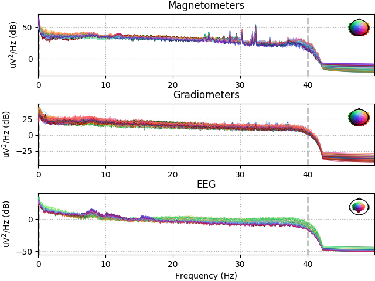
- 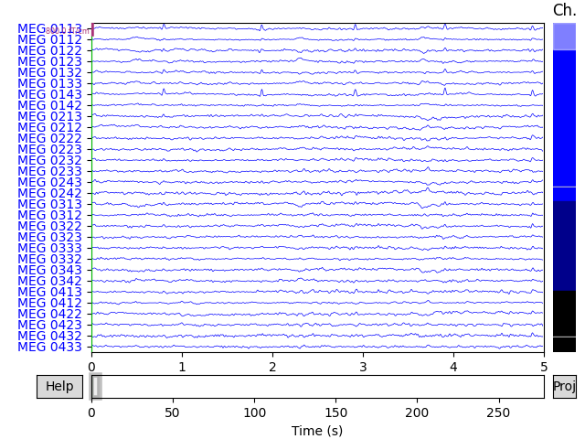
Out:
Effective window size : 13.639 (s)
Effective window size : 13.639 (s)
Effective window size : 13.639 (s)
Preprocessing¶
MNE-Python supports a variety of preprocessing approaches and techniques
(maxwell filtering, signal-space projection, independent components analysis,
filtering, downsampling, etc); see the full list of capabilities in the
mne.preprocessing and mne.filter submodules. Here we’ll clean
up our data by performing independent components analysis
(ICA); for brevity we’ll skip the steps that
helped us determined which components best capture the artifacts (see
Repairing artifacts with ICA for a detailed walk-through of that process).
# set up and fit the ICA
ica = mne.preprocessing.ICA(n_components=20, random_state=97, max_iter=800)
ica.fit(raw)
ica.exclude = [1, 2] # details on how we picked these are omitted here
ica.plot_properties(raw, picks=ica.exclude)
- 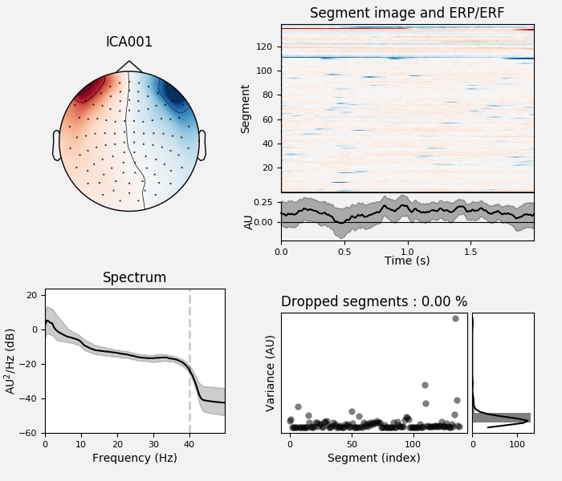
- 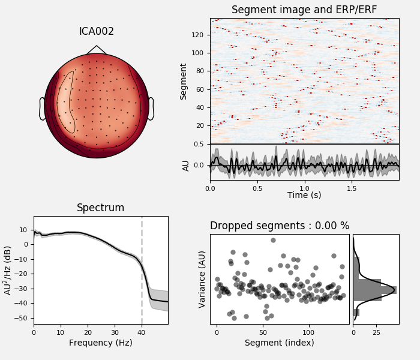
Out:
Fitting ICA to data using 364 channels (please be patient, this may take a while)
Inferring max_pca_components from picks
Selecting by number: 20 components
Fitting ICA took 2.4s.
Using multitaper spectrum estimation with 7 DPSS windows
138 matching events found
No baseline correction applied
Not setting metadata
0 projection items activated
0 bad epochs dropped
138 matching events found
No baseline correction applied
Not setting metadata
0 projection items activated
0 bad epochs dropped
Once we’re confident about which component(s) we want to remove, we pass them
as the exclude parameter and then apply the ICA to the raw signal. The
apply() method requires the raw data to be
loaded into memory (by default it’s only read from disk as-needed), so we’ll
use load_data() first. We’ll also make a copy of the
Raw object so we can compare the signal before and after
artifact removal side-by-side:
orig_raw = raw.copy()
raw.load_data()
ica.apply(raw)
# show some frontal channels to clearly illustrate the artifact removal
chs = ['MEG 0111', 'MEG 0121', 'MEG 0131', 'MEG 0211', 'MEG 0221', 'MEG 0231',
'MEG 0311', 'MEG 0321', 'MEG 0331', 'MEG 1511', 'MEG 1521', 'MEG 1531',
'EEG 001', 'EEG 002', 'EEG 003', 'EEG 004', 'EEG 005', 'EEG 006',
'EEG 007', 'EEG 008']
chan_idxs = [raw.ch_names.index(ch) for ch in chs]
orig_raw.plot(order=chan_idxs, start=12, duration=4)
raw.plot(order=chan_idxs, start=12, duration=4)
- 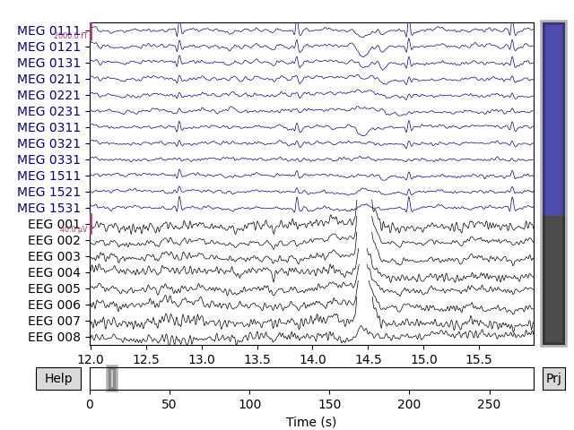
- 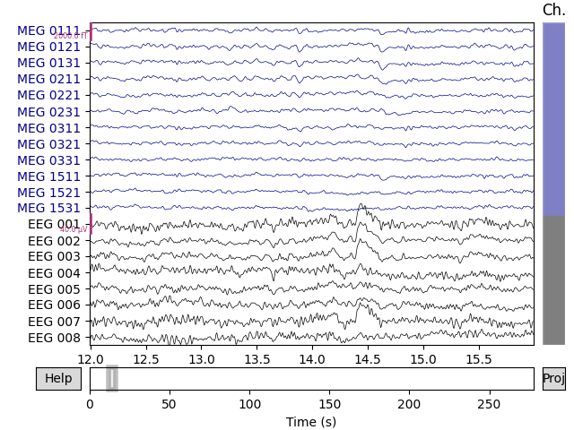
Out:
Reading 0 ... 41699 = 0.000 ... 277.709 secs...
Transforming to ICA space (20 components)
Zeroing out 2 ICA components
Detecting experimental events¶
The sample dataset includes several “STIM” channels
that recorded electrical
signals sent from the stimulus delivery computer (as brief DC shifts /
squarewave pulses). These pulses (often called “triggers”) are used in this
dataset to mark experimental events: stimulus onset, stimulus type, and
participant response (button press). The individual STIM channels are
combined onto a single channel, in such a way that voltage
levels on that channel can be unambiguously decoded as a particular event
type. On older Neuromag systems (such as that used to record the sample data)
this summation channel was called STI 014, so we can pass that channel
name to the mne.find_events() function to recover the timing and
identity of the stimulus events.
events = mne.find_events(raw, stim_channel='STI 014')
print(events[:5]) # show the first 5
Out:
319 events found
Event IDs: [ 1 2 3 4 5 32]
[[6994 0 2]
[7086 0 3]
[7192 0 1]
[7304 0 4]
[7413 0 2]]
The resulting events array is an ordinary 3-column NumPy array, with sample number in the first column and integer event ID
in the last column; the middle column is usually ignored. Rather than keeping
track of integer event IDs, we can provide an event dictionary that maps
the integer IDs to experimental conditions or events. In this dataset, the
mapping looks like this:
Event ID |
Condition |
|---|---|
1 |
auditory stimulus (tone) to the left ear |
2 |
auditory stimulus (tone) to the right ear |
3 |
visual stimulus (checkerboard) to the left visual field |
4 |
visual stimulus (checkerboard) to the right visual field |
5 |
smiley face (catch trial) |
32 |
subject button press |
event_dict = {'auditory/left': 1, 'auditory/right': 2, 'visual/left': 3,
'visual/right': 4, 'smiley': 5, 'buttonpress': 32}
Event dictionaries like this one are used when extracting epochs from
continuous data; the / character in the dictionary keys allows pooling
across conditions by requesting partial condition descriptors (i.e.,
requesting 'auditory' will select all epochs with Event IDs 1 and 2;
requesting 'left' will select all epochs with Event IDs 1 and 3). An
example of this is shown in the next section. There is also a convenient
plot_events() function for visualizing the distribution of
events across the duration of the recording (to make sure event detection
worked as expected). Here we’ll also make use of the Info
attribute to get the sampling frequency of the recording (so our x-axis will
be in seconds instead of in samples).
fig = mne.viz.plot_events(events, event_id=event_dict, sfreq=raw.info['sfreq'],
first_samp=raw.first_samp)
For paradigms that are not event-related (e.g., analysis of resting-state
data), you can extract regularly spaced (possibly overlapping) spans of data
by creating events using mne.make_fixed_length_events() and then
proceeding with epoching as described in the next section.
Epoching continuous data¶
The Raw object and the events array are the bare minimum
needed to create an Epochs object, which we create with the
Epochs class constructor. Here we’ll also specify some data
quality constraints: we’ll reject any epoch where peak-to-peak signal
amplitude is beyond reasonable limits for that channel type. This is done
with a rejection dictionary; you may include or omit thresholds for any of
the channel types present in your data. The values given here are reasonable
for this particular dataset, but may need to be adapted for different
hardware or recording conditions. For a more automated approach, consider
using the autoreject package.
reject_criteria = dict(mag=4000e-15, # 4000 fT
grad=4000e-13, # 4000 fT/cm
eeg=150e-6, # 150 µV
eog=250e-6) # 250 µV
We’ll also pass the event dictionary as the event_id parameter (so we can
work with easy-to-pool event labels instead of the integer event IDs), and
specify tmin and tmax (the time relative to each event at which to
start and end each epoch). As mentioned above, by default
Raw and Epochs data aren’t loaded into memory
(they’re accessed from disk only when needed), but here we’ll force loading
into memory using the preload=True parameter so that we can see the
results of the rejection criteria being applied:
epochs = mne.Epochs(raw, events, event_id=event_dict, tmin=-0.2, tmax=0.5,
reject=reject_criteria, preload=True)
Out:
319 matching events found
Applying baseline correction (mode: mean)
Not setting metadata
Created an SSP operator (subspace dimension = 4)
4 projection items activated
Loading data for 319 events and 106 original time points ...
Rejecting epoch based on EOG : ['EOG 061']
Rejecting epoch based on EOG : ['EOG 061']
Rejecting epoch based on MAG : ['MEG 1711']
Rejecting epoch based on EOG : ['EOG 061']
Rejecting epoch based on EOG : ['EOG 061']
Rejecting epoch based on MAG : ['MEG 1711']
Rejecting epoch based on EEG : ['EEG 008']
Rejecting epoch based on EOG : ['EOG 061']
Rejecting epoch based on EOG : ['EOG 061']
Rejecting epoch based on EOG : ['EOG 061']
10 bad epochs dropped
Next we’ll pool across left/right stimulus presentations so we can compare
auditory versus visual responses. To avoid biasing our signals to the
left or right, we’ll use equalize_event_counts() first to
randomly sample epochs from each condition to match the number of epochs
present in the condition with the fewest good epochs.
conds_we_care_about = ['auditory/left', 'auditory/right',
'visual/left', 'visual/right']
epochs.equalize_event_counts(conds_we_care_about) # this operates in-place
aud_epochs = epochs['auditory']
vis_epochs = epochs['visual']
del raw, epochs # free up memory
Out:
Dropped 7 epochs: 121, 195, 258, 271, 273, 274, 275
Like Raw objects, Epochs objects also have a
number of built-in plotting methods. One is plot_image(),
which shows each epoch as one row of an image map, with color representing
signal magnitude; the average evoked response and the sensor location are
shown below the image:
aud_epochs.plot_image(picks=['MEG 1332', 'EEG 021'])
- 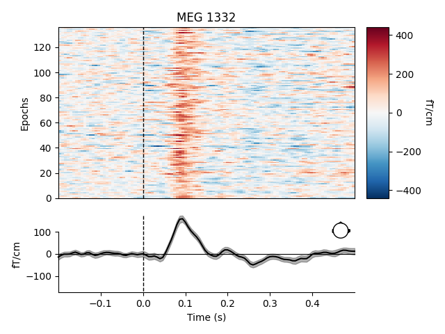

Out:
136 matching events found
No baseline correction applied
Not setting metadata
0 projection items activated
0 bad epochs dropped
136 matching events found
No baseline correction applied
Not setting metadata
0 projection items activated
0 bad epochs dropped
Note
Both Raw and Epochs objects have
get_data() methods that return the underlying data
as a NumPy array. Both methods have a picks
parameter for subselecting which channel(s) to return; raw.get_data()
has additional parameters for restricting the time domain. The resulting
matrices have dimension (n_channels, n_times) for
Raw and (n_epochs, n_channels, n_times) for
Epochs.
Time-frequency analysis¶
The mne.time_frequency submodule provides implementations of several
algorithms to compute time-frequency representations, power spectral density,
and cross-spectral density. Here, for example, we’ll compute for the auditory
epochs the induced power at different frequencies and times, using Morlet
wavelets. On this dataset the result is not especially informative (it just
shows the evoked “auditory N100” response); see here for a more extended example on a dataset with richer
frequency content.
frequencies = np.arange(7, 30, 3)
power = mne.time_frequency.tfr_morlet(aud_epochs, n_cycles=2, return_itc=False,
freqs=frequencies, decim=3)
power.plot(['MEG 1332'])
Out:
No baseline correction applied
Estimating evoked responses¶
Now that we have our conditions in aud_epochs and vis_epochs, we can
get an estimate of evoked responses to auditory versus visual stimuli by
averaging together the epochs in each condition. This is as simple as calling
the average() method on the Epochs object,
and then using a function from the mne.viz module to compare the
global field power for each sensor type of the two Evoked
objects:
aud_evoked = aud_epochs.average()
vis_evoked = vis_epochs.average()
mne.viz.plot_compare_evokeds(dict(auditory=aud_evoked, visual=vis_evoked),
legend='upper left', show_sensors='upper right')
- 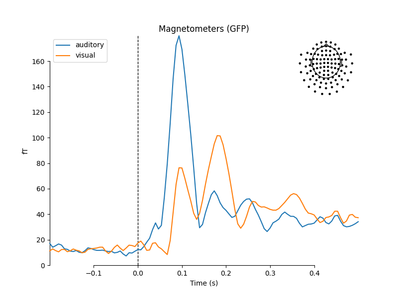
- 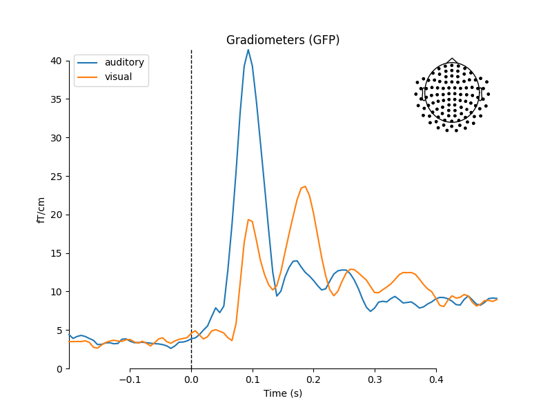
Out:
Multiple channel types selected, returning one figure per type.
combining channels using "gfp"
combining channels using "gfp"
combining channels using "gfp"
combining channels using "gfp"
combining channels using "gfp"
combining channels using "gfp"
We can also get a more detailed view of each Evoked object
using other plotting methods such as plot_joint() or
plot_topomap(). Here we’ll examine just the EEG channels,
and see the classic auditory evoked N100-P200 pattern over dorso-frontal
electrodes, then plot scalp topographies at some additional arbitrary times:
aud_evoked.plot_joint(picks='eeg')
aud_evoked.plot_topomap(times=[0., 0.08, 0.1, 0.12, 0.2], ch_type='eeg')
- 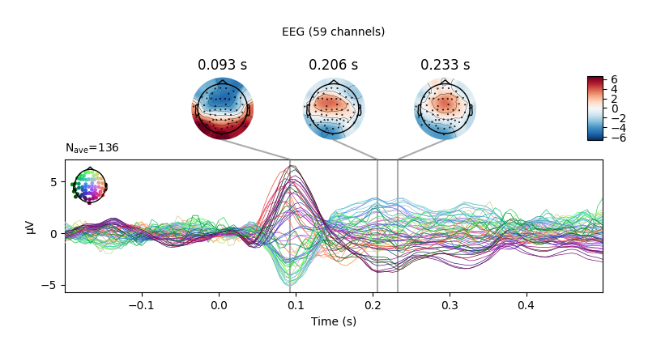
- 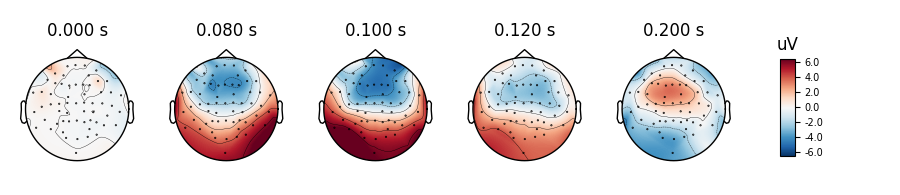
Evoked objects can also be combined to show contrasts between conditions,
using the mne.combine_evoked() function. A simple difference can be
generated by negating one of the Evoked objects passed into the
function. We’ll then plot the difference wave at each sensor using
plot_topo():
evoked_diff = mne.combine_evoked([aud_evoked, -vis_evoked], weights='equal')
evoked_diff.pick_types('mag').plot_topo(color='r', legend=False)
Inverse modeling¶
Finally, we can estimate the origins of the evoked activity by projecting the sensor data into this subject’s source space (a set of points either on the cortical surface or within the cortical volume of that subject, as estimated by structural MRI scans). MNE-Python supports lots of ways of doing this (dynamic statistical parametric mapping, dipole fitting, beamformers, etc.); here we’ll use minimum-norm estimation (MNE) to generate a continuous map of activation constrained to the cortical surface. MNE uses a linear inverse operator to project EEG+MEG sensor measurements into the source space. The inverse operator is computed from the forward solution for this subject and an estimate of the covariance of sensor measurements. For this tutorial we’ll skip those computational steps and load a pre-computed inverse operator from disk (it’s included with the sample data). Because this “inverse problem” is underdetermined (there is no unique solution), here we further constrain the solution by providing a regularization parameter specifying the relative smoothness of the current estimates in terms of a signal-to-noise ratio (where “noise” here is akin to baseline activity level across all of cortex).
# load inverse operator
inverse_operator_file = os.path.join(sample_data_folder, 'MEG', 'sample',
'sample_audvis-meg-oct-6-meg-inv.fif')
inv_operator = mne.minimum_norm.read_inverse_operator(inverse_operator_file)
# set signal-to-noise ratio (SNR) to compute regularization parameter (λ²)
snr = 3.
lambda2 = 1. / snr ** 2
# generate the source time course (STC)
stc = mne.minimum_norm.apply_inverse(vis_evoked, inv_operator,
lambda2=lambda2,
method='MNE') # or dSPM, sLORETA, eLORETA
Out:
Reading inverse operator decomposition from /home/circleci/mne_data/MNE-sample-data/MEG/sample/sample_audvis-meg-oct-6-meg-inv.fif...
Reading inverse operator info...
[done]
Reading inverse operator decomposition...
[done]
305 x 305 full covariance (kind = 1) found.
Read a total of 4 projection items:
PCA-v1 (1 x 102) active
PCA-v2 (1 x 102) active
PCA-v3 (1 x 102) active
Average EEG reference (1 x 60) active
Noise covariance matrix read.
22494 x 22494 diagonal covariance (kind = 2) found.
Source covariance matrix read.
22494 x 22494 diagonal covariance (kind = 6) found.
Orientation priors read.
22494 x 22494 diagonal covariance (kind = 5) found.
Depth priors read.
Did not find the desired covariance matrix (kind = 3)
Reading a source space...
Computing patch statistics...
Patch information added...
Distance information added...
[done]
Reading a source space...
Computing patch statistics...
Patch information added...
Distance information added...
[done]
2 source spaces read
Read a total of 4 projection items:
PCA-v1 (1 x 102) active
PCA-v2 (1 x 102) active
PCA-v3 (1 x 102) active
Average EEG reference (1 x 60) active
Source spaces transformed to the inverse solution coordinate frame
Preparing the inverse operator for use...
Scaled noise and source covariance from nave = 1 to nave = 136
Created the regularized inverter
Created an SSP operator (subspace dimension = 3)
Created the whitener using a noise covariance matrix with rank 302 (3 small eigenvalues omitted)
Applying inverse operator to "0.50 * visual/left + 0.50 * visual/right"...
Picked 305 channels from the data
Computing inverse...
Eigenleads need to be weighted ...
Computing residual...
Explained 70.2% variance
Combining the current components...
[done]
Finally, in order to plot the source estimate on the subject’s cortical
surface we’ll also need the path to the sample subject’s structural MRI files
(the subjects_dir):
# path to subjects' MRI files
subjects_dir = os.path.join(sample_data_folder, 'subjects')
# plot
stc.plot(initial_time=0.1, hemi='split', views=['lat', 'med'],
subjects_dir=subjects_dir)

Out:
Using control points [8.61922423e-11 1.06837855e-10 4.49139511e-10]
The remaining tutorials have much more detail on each of these topics (as well as many other capabilities of MNE-Python not mentioned here: connectivity analysis, encoding/decoding models, lots more visualization options, etc). Read on to learn more!
Total running time of the script: ( 0 minutes 47.904 seconds)
Estimated memory usage: 471 MB